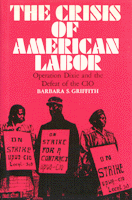

The dramatic account of the failure of Operation Dixie, the attempt by the CIO to unionize the postwar South
The dramatic account of the failure of Operation Dixie, the attempt by the CIO to unionize the postwar South


 The dramatic account of the failure of Operation Dixie, the attempt by the CIO to unionize the postwar South
The dramatic account of the failure of Operation Dixie, the attempt by the CIO to unionize the postwar South

|  |
The Crisis of American LaborOperation Dixie and the Defeat of the CIOBarbara S. Griffithcloth EAN: 978-0-87722-503-4 (ISBN: 0-87722-503-6) |
"Operation Dixie...is certainly one of the most important crossroads of twentieth century American history. Had it succeeded, postwar American history might have been very different indeed. Griffith offers an illuminating exploration of the political and social texture of Southern industrial life which explains why the CIO encountered such enormous resistance to its organizing campaign. One reason the story she tells is so well textured is that the heart of her book consists of more than fifty oral interviews with Operation Dixie organizers. These are really quite extraordinary: dramatic, informative, self-reflective, full of humor and pathos."
—Nelson Lichtenstein, Department of History, The Catholic University of America
Operation Dixie—the attempt by the Congress of Industrial Organizations (CIO) to unionize the postwar South—was on the defensive almost as soon as it began in 1946. Although the South had a longstanding reputation for being particularly unreceptive to organized labor, the CIO decided that a Southern drive was necessary to consolidate the considerable gains unions had made during the war and to remove the South as a non-union haven for "runaway" Northern businesses. Through extensive archival research and interviews with participants in the struggle, Barbara Griffith presents the dramatic account of the failure of Operation Dixie, examines the factors that contributed to its defeat, and specifies the ominous consequences for organized labor in America.
The Crisis of American Labor offers an overview of the entire effort in the twelve-state region from 1946 to 1953. Much of the story is told in the words of the people who were involved: the organizers who staffed the drive and the employees they hoped to convince. Griffith includes extensive extracts from correspondence between organizers and labor leaders in the North as well as interviews with retired Operation Dixie organizers and Southern workers. The excerpts from these interviews are both enlightening and poignant, as they show how important this defeat was to the evolution of the South, the political economy, and race relations.
Barbara S. Griffith is an historian with the Smithsonian National Museum of American History.
American Studies
Labor Studies and Work
© 2015 Temple University. All Rights Reserved. This page: http://www.temple.edu/tempress/titles/501_reg.html.